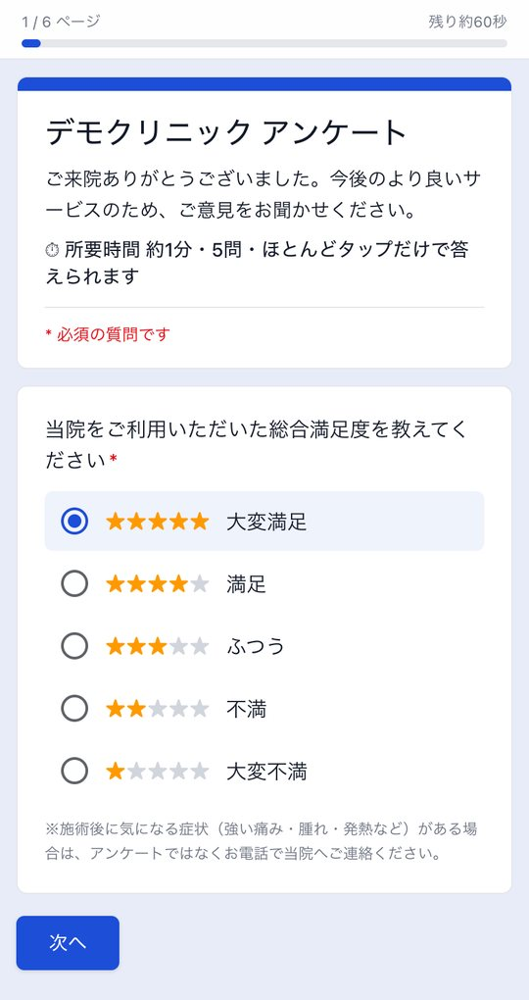
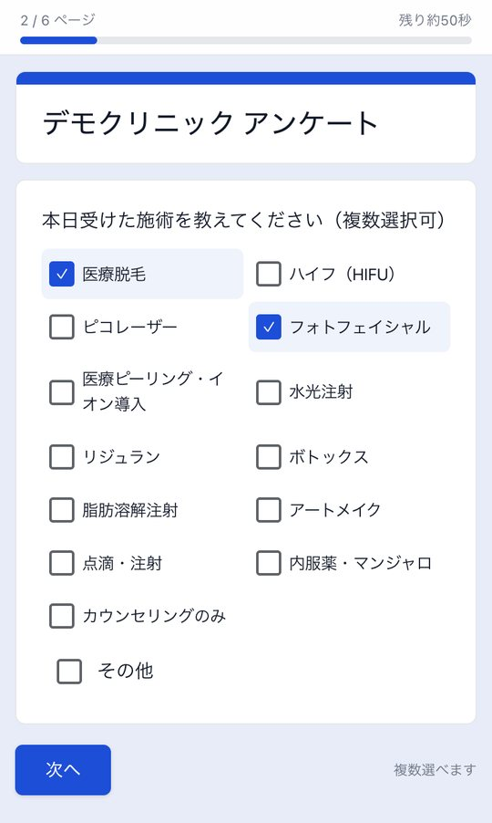
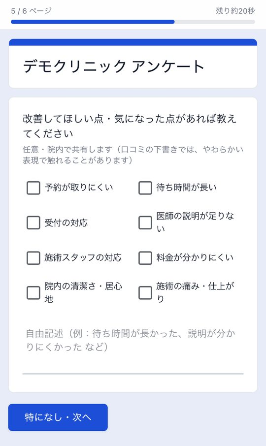
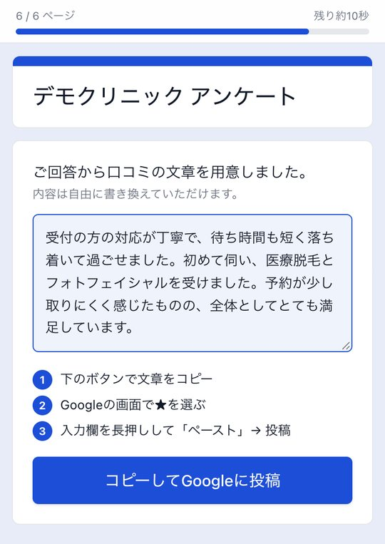

院内のQRコードから、スマホで約1分のアンケート。届いた声はすぐ院長のメールへ届き、改善に使えます。口コミを書いてくださる患者さんには、回答をもとにした文章の下書きと、Googleの画面までの手順をお渡しします。

デモ画面（架空のクリニック）
受付や待合に置いたQRコードを、患者さんが自分のスマホで読み取ります。アプリのインストールも会員登録も要りません。



実際に回答できるデモがあります。回答は保存されず、どこにも送られません。
デモを試すしんゆり美容健康クリニックの本院・府中院で、毎日使っている仕組みです。
回答が届くたびに、満足度・受けた施術・良かった点・改善してほしい点をメールでお知らせします。「待ち時間が長い」「説明が足りない」といった声に、その日のうちに手を打てます。
「口コミを書きたいけれど、何を書けばいいか分からない」という患者さんに、回答をもとにした下書きをお渡しします。そのまま使うか、自分で書くかは患者さんが選びます。
下書きには、患者さんが選んだ施術の名前が入ります。「ハイフを受けました」のような具体的な口コミは、これから来院を考える方にとって参考になり、地図検索やAIの検索で院が見つかる手がかりにもなります。
下書きは来院の体験（受付の対応、説明の分かりやすさなど）を中心にし、「必ず効く」「痛みゼロ」のような効果の断定や誇大な表現は入れません。
口コミには、Googleの口コミのルールや、ステルスマーケティング規制（景品表示法）、医療広告ガイドラインが関わります。仕組みも案内も、これらに沿うように作っています。
下書きはあくまで手助けです。内容の確認・書き換え・投稿は患者さんが行い、院が代わりに投稿することはありません。
口コミと引き換えの割引やプレゼントは、ステマ規制やGoogleのルールに触れるおそれがあります。導入時に、院内での声かけの仕方もお伝えします。
改善してほしい点も含めて、すべての回答がそのまま院長に届きます。下書きも良い点だけを並べず、気になった点があれば穏やかな言葉で1文添えます。
回答は国内（東京）のクラウドに保存し、暗号化した通信でやりとりします。管理画面は院のスタッフだけがログインして使います。
この仕組みは、口コミの件数や評価が上がることを約束するものではありません。患者さんの声を集めて院の改善に活かし、書いてくださる方の手間を減らすための道具です。
表示は1院あたり・税抜。最低契約3か月、その後は1か月単位で解約できます。2院目からは月額半額。導入費には、質問と選択肢の設定、院の色の反映、QRコードと院内掲示の用意、Googleの口コミ画面の設定が含まれます。
使えます。カルテや予約システムとはつながずに動くので、いまの受付の流れを変えずに導入できます。
受けた施術の選択肢は、院のメニューに合わせて設定します。質問の数は、患者さんが1分ほどで答えられる範囲をおすすめしています。
院長や院のメールアドレスに、回答ごとにお知らせします。過去の回答は管理画面でいつでも見られます。
患者さんご本人です。仕組みが用意するのは、回答をもとにした下書きまでです。患者さんは内容を確認し、必要に応じて書き換えてから、ご自身のGoogleアカウントで投稿します。下書きを使わずに自分で書くこともできます。
いまはGoogleの口コミに対応しています。ほかのサイトはご相談ください。
院のメニューに合わせた画面を、お打ち合わせでお見せします。相談フォームの「ご検討中の内容」で「患者アンケートと口コミ案内」を選んでください。